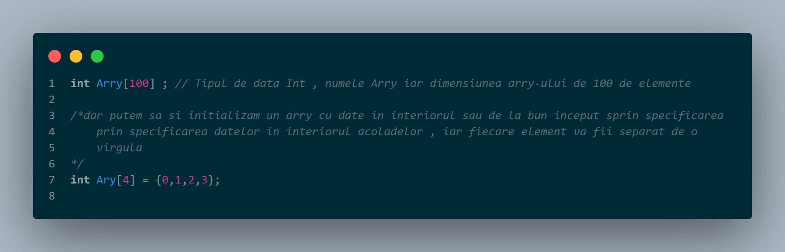
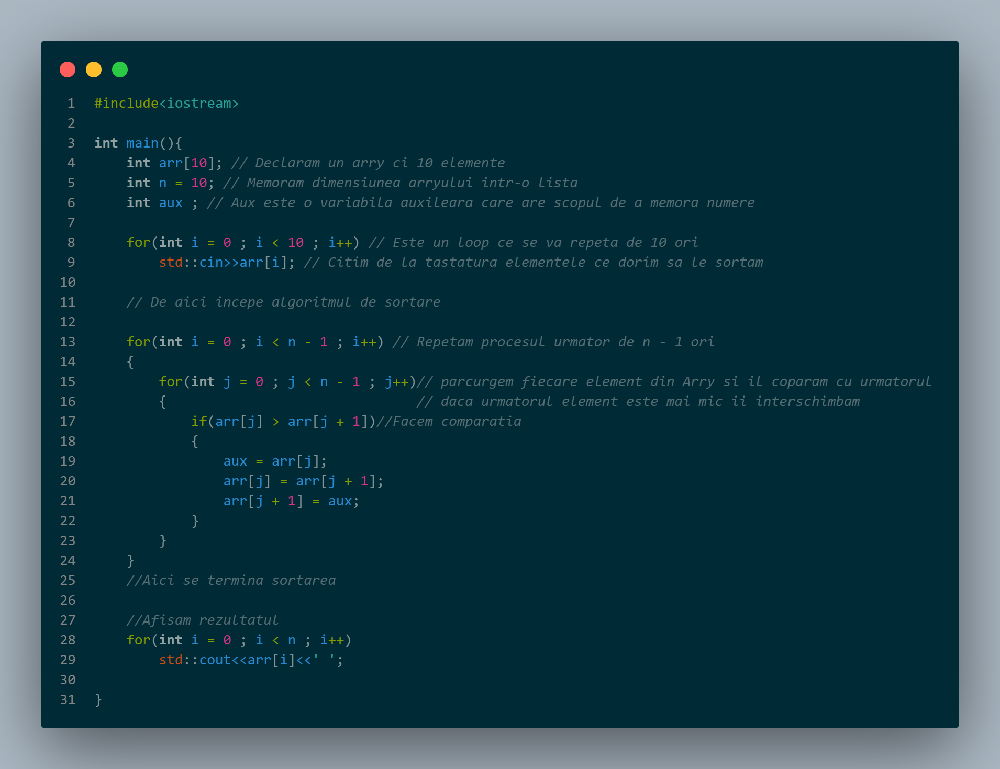

Cpp este un limbaj bine structurat si specific , tocmai de aceea pentru fiecare variabila trebuie specificat tipul de data pe care urmeaza sa o stocheze
Tipuri de date :
Int - acest tip de data reprezinta numerele intregi , adica toate numerele fara virgula ex : 1 2 3 -4 -5 etc
si are o dimensiune de 4 bits , cea ce inseamna ca poate stoca numere de la -2,147,483,648
până la 2,147,483,647
Float - acest tip de data stocheaza toate numerele reale , adica numerele cu virgula
spre exemplu 1,2 5,76 etc
Bool -Bool este un tip de data care stocheaza doar 1 sau 0 reprezentand Adevrat sau Fals. Acest tip de data este util
cand este nevoie de o variabila care sa mentia o conditie , adevarata sau falsa
Char -Char este tipul de data care memoreaza caracterele , spre exemplu "a" sau "b" . Aceast tip de variabila
ocupa doar 8biti iar din acest motiv poate memora doar un singur caracter
Ca in orice limbaj de programare si in Cpp exista conceptul de arry . Acest obict este defapt un container ce contine mai multe elemente de acelasi tip ,
iar fiecare element din arry poate fi accesat prin indexul sau .
Exeplu urmator va prezenta metoda de declarare a unui arry in cpp , iar acest lucru se va face prin specificarea tipului de data pe urma numele
arry-ului

Acestea sunt doar niste elemente de baza in cpp , acum este timpul de a va prezenta exemple de algoritmi dar prima data sa incepem cu primul program pe care il scrie orice programator :

Urmatorul algoritm este un algoritm de sortare si anume Buble Sort:
